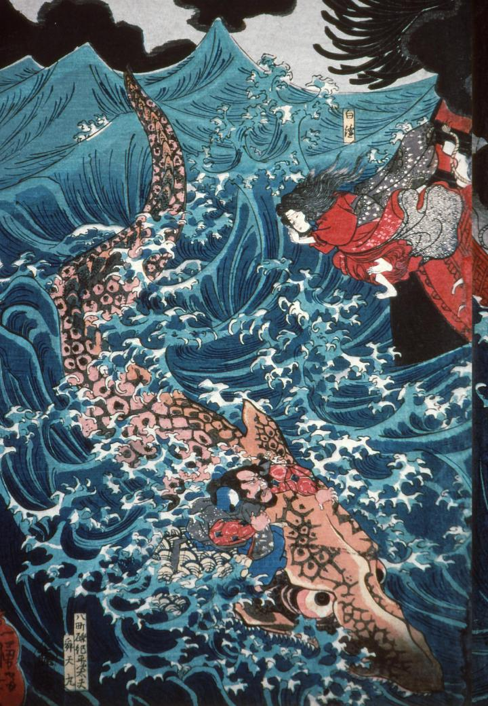

海中に現れた巨大な鰐鮫。橙色の鱗が、まるで鎧のようである。頭に角のような突起が確認できる。
著作者：歌川国芳／出典：親書誌：A5_hermitage_0007：肥後国水俣の海上にて為朝難風に遇ふ；ヒゴノクニミナマタノカイジョウニテタメトモナンプウニアウ／日付：2011／資源識別子：A5_hermitage_0007_0002_0000
Copyright (c)2010- International Research Center for Japanese Studies, Kyoto, Japan. All rights reserved.